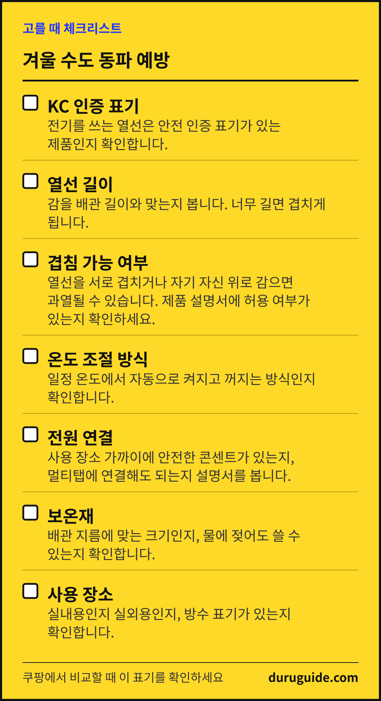

겨울 수도 동파 예방, 보온재와 열선 고를 때 볼 것
안 사도 되는 경우
계량기함에 보온재를 채우고 배관 틈을 막고, 아주 추운 밤에 물을 가늘게 틀어 두는 것으로 버틸 수 있다면 열선을 새로 사지 않아도 돼요.
이런 상황이죠
한겨울 아침에 수도꼭지를 열었는데 물이 나오지 않거나, 계량기 근처가 얼어 있는 상황입니다. 베란다, 외부 수도, 보일러실 근처 배관은 기온이 크게 내려가면 쉽게 얼고, 얼면서 부풀어 배관이 터지기도 합니다. 터진 뒤에는 수리 비용과 누수 피해가 따르니 겨울이 오기 전에 미리 살펴 두는 편이 좋습니다.
왜 생기나
배관 안의 물이 어는 온도 아래로 오래 머물 때 생깁니다.
- 외부에 노출된 배관과 계량기함은 바깥 공기에 그대로 닿습니다.
- 바람이 드나드는 틈이 있으면 같은 기온이어도 훨씬 빨리 얼어붙습니다.
- 여러 날 집을 비우거나 물을 쓰지 않으면 배관 속 물이 계속 고여 있어 얼기 쉽습니다.
- 보온재가 오래되어 삭았거나 젖어 있으면 보온 효과가 크게 떨어집니다.
사기 전에 먼저 해볼 것
돈이 들지 않는 일부터 합니다.
- 계량기함 뚜껑이 닫혀 있는지, 안에 보온재가 들어 있는지 확인합니다. 헌 옷이나 수건, 스티로폼 같은 것을 채워 넣어 두는 방법도 있습니다.
- 배관이 노출된 곳의 틈을 막아 바람이 직접 닿지 않게 합니다.
- 아주 추운 날 밤에는 수도꼭지를 아주 조금 열어 물이 가늘게 계속 흐르게 두면 어는 것을 늦추는 데 도움이 될 수 있습니다. 다만 물이 계속 흐르는 것이므로 사용량을 고려하세요.
- 오랫동안 집을 비울 때는 지역 안내에 따라 물을 잠그거나 배관의 물을 빼 두는 방법을 알아봅니다.
- 이미 설치된 열선이 있다면 피복이 갈라지거나 변색되지 않았는지 살펴보세요. 손상된 열선은 쓰지 않는 것이 안전합니다.
이미 얼어 버렸다면 천천히 녹이는 것이 원칙입니다.
- 수건을 대고 미지근한 물을 천천히 부어 주거나 따뜻한 바람을 약하게 쐬어 줍니다.
- 토치나 라이터 같은 불꽃을 배관에 직접 대지 마세요. 배관이 손상되고 화재 위험이 있습니다.
- 끓는 물을 갑자기 붓는 것도 배관이 갈라질 수 있으니 피합니다.
- 이미 새는 곳이 보이면 수도 밸브를 잠그고 전문가에게 연락하세요.
고를 때 체크리스트
| 확인할 것 | 이유 |
|---|---|
| KC 인증 표기 | 전기를 쓰는 열선은 안전 인증 표기가 있는 제품인지 확인합니다. |
| 열선 길이 | 감을 배관 길이와 맞는지 봅니다. 너무 길면 겹치게 됩니다. |
| 겹침 가능 여부 | 열선을 서로 겹치거나 자기 자신 위로 감으면 과열될 수 있습니다. 제품 설명서에 허용 여부가 있는지 확인하세요. |
| 온도 조절 방식 | 일정 온도에서 자동으로 켜지고 꺼지는 방식인지 확인합니다. |
| 전원 연결 | 사용 장소 가까이에 안전한 콘센트가 있는지, 멀티탭에 연결해도 되는지 설명서를 봅니다. |
| 보온재 | 배관 지름에 맞는 크기인지, 물에 젖어도 쓸 수 있는지 확인합니다. |
| 사용 장소 | 실내용인지 실외용인지, 방수 표기가 있는지 확인합니다. |
열선은 보온재 안쪽에 두고 그 위를 감싸는 방식이 많지만, 제품마다 설치 순서가 다르니 설명서를 따르세요. 설치 후에는 처음 전원을 넣었을 때 과하게 뜨거워지지 않는지 살펴보는 것이 좋습니다.
추천 제품 찾기
먼저 얼 위험이 있는 배관의 위치와 길이, 가까운 콘센트 유무를 정한 뒤, 쿠팡에서 동파 방지 열선과 보온재를 비교해 보세요. KC 인증 표기, 열선 길이, 겹침 가능 여부와 사용 장소 표기를 확인하는 것이 좋습니다. 현재 가격은 쿠팡에서 확인해 주세요.

이 포스팅은 쿠팡 파트너스 활동의 일환으로, 이에 따른 일정액의 수수료를 제공받습니다.
이 콘텐츠는 토스쇼핑 쉐어링크 활동의 일환으로, 링크를 통한 구매가 발생하면 일정 수수료를 지급받습니다.